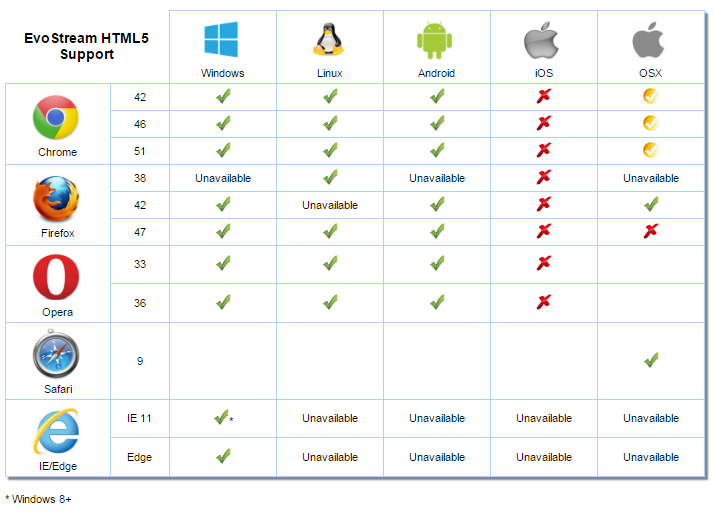
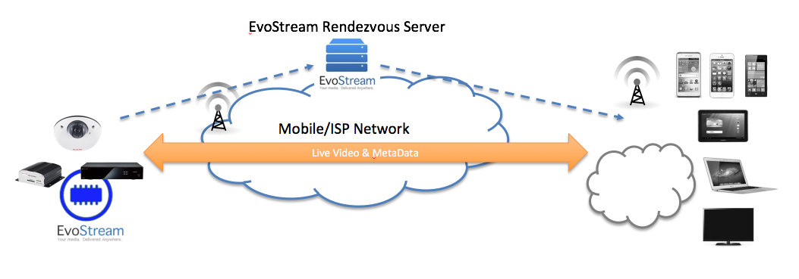
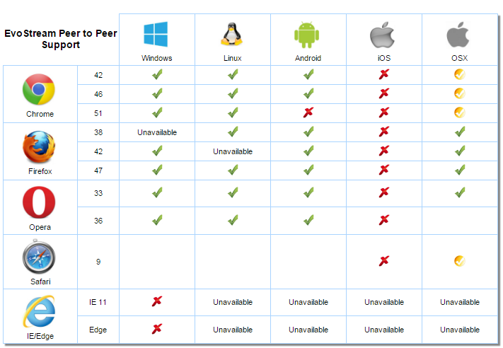

Protocol Support and Specifics
This section will dive into the specific capabilities of the EvoStream Media Server. Please keep in mind that directionality is always from the perspective of the EMS. Therefore “inbound” will refer to any stream coming into the EMS and “outbound” will refer to any stream leaving the EMS.
Real Time Messaging Protocol (RTMP)
The EMS is fully compatible with the RTMP protocol. This means that it can receive streams from Adobe’s Flash Media Live Encoder (FMLE), Wirecast, Flash Applets, and many other sources. It also enables any Flash or Adobe-Air based clients to play streams from the EMS. Some examples of clients/players that use RTMP are FlowPlayer, JWPlayer and VLC. Using RTMP, you can reach ANY Flash enabled web browser, which really means that you can reach any browser on Windows, Mac OSX and Linux.
Ingesting RTMP
There are several ways that the EMS can use RTMP as a stream source. The first method is to use theRuntime-API to pull a stream from some source. An example of a pullstream command is as follows:
pullstream uri=rtmp://192.168.1.5/live/MyTestStream localstreamname=TestStream
This command tells the EMS to go and get “MyTestStream” from the server at 192.168.1.5, and then name the stream locally “TestStream”. Please see EMS Basics for more information on local stream names.
The typical URI format for requesting RTMP streams is as follows:
rtmp://[username[:password]@]IP[:port]/<app name>/<stream name>
The EMS also allows you to PUSH an RTMP stream into it. Software like Wirecast and FMLE prefer this type of paradigm. The EMS listens for RTMP streams on port 1935, which is the default RTMP port. You will need to consult the manuals for your stream source to understand how to push a stream. The EMS can require authentication for streams that are being pushed to it. If authentication is enabled, you will need to either supply authentication details along with your pushed stream, or disable authentication for the EMS before the EMS will accept your streams. Please see the Security and Authentication for more information.
The EMS provides additional RTMP ingest security through RMTP Ingest Points. Please see RTMP Ingest Points below for more information.
The EMS accepts RTMP streams pushed both as PUBLISH and RECORD. PUBLISH streams become local live streams. RECORD streams also become local live streams but are also recorded to file. The recordedStreamsStorage parameter in the config/config.lua file specifies a default location to place files when an RTMP RECORD stream is pushed to the EMS.
Outbound RTMP (Live and VOD)
Any source stream can be played back via RTMP. Most often a user will be using a Flash based player which will make an RTMP request on the EMS. To request an RTMP stream from the EMS, you need to use a URI formatted as follows:
rtmp://[username[:password]@]IP[:port]/<live/vod>/<LocalStreamName>
An example of this URI may be:
rtmp://192.168.1.5/live/MyTestStream
The EMS can also PUSH streams towards another server or some other destination. The pushStream Runtime-API function is used to do this. An example of the pushStream API is as follows:
pushStream uri=rtmp://192.168.1.5/live/ localStreamName=MyTestStream targetStreamName=PushedStreamName
RTMPT
RTMP via HTTP is supported by the EMS. RTMPT can be leveraged in exactly the same way as RTMP. You will simply need to use “RTMPT” instead of “RTMP” in the various URIs and addresses. To enable the EMS to accept requests from RTMPT clients, you must create an Acceptor (listener) in the config/config.lua file that looks like the following:
{
ip="0.0.0.0",
port=8081,
protocol="inboundRtmpt"
},
RTMPS
RTMP secured by SSL is supported by the EMS. RTMPS can also be leveraged in exactly the same way as RTMP. In addition to using “RTMPS” instead of “RTMP” in the various URIs and addresses, you will also need to create and specify a certificate and key to be able to “Serve” RTMPS streams.
You must create a signed certificate file using a library like OpenSSL (.crt) and a corresponding public key file (.pem). You must then create an Acceptor (listener) in the config/config.lua file that looks like the following:
{
ip="0.0.0.0",
port=8082,
protocol="inboundRtmps",
sslKey="server.key",
sslCert="server.crt"
},
The paths to the sslKey and sslCert are relative to the runtime directory. It may be best to use absolute paths when specifying those files.
Again, this setup is only necessary when serving these files (clients requesting a stream via RTMPS). These keys are not used when pushing or pulling a stream since the other side of the transaction will be acting as the server and will therefore provide its own keys
RTMP Ingest Points
When Ingest Points are active, the EMS requires streams pushed to the EMS to provide a specific Target Stream Name. This mechanism provides a robust way to allow trusted partners to easily push streams to your EMS server.
Ingest Points operate by specifying two linked values: the privateStreamName and the publicStreamName. Both the privateStreamName and the publicStreamName must be unique within a given EMS instance. When an RTMP stream is PUSHED to the EMS, the Target Stream Name defined within the RTMP stream must match one of the defined privateStreamNames. If a match exists, the stream is accepted and brought into the EMS. This new stream can then be accessed from the EMS using the associated publicStreamName.
To enable Ingest Points, you must set the hasIngestPoints parameter in the config/config.lua file to true:
hasingestpoints=true,
Ingest Points have a full set of API functions which must beused to add and remove Ingest Points. The API functions are listed here, but please see the API Definition doc for a full description.
- createIngestPoint
- removeIngestPoint
- listIngestPoints
Ingest Points are stored by the EMS into the config/ingestPoints.xml file.
Real Time Streaming Protocol (RTSP)
Using the RTSP protocol can many different players and servers, including the native Android media player. RTSP can be used as both a stream source and as an outbound stream protocol. There are a few variants of RTSP and so it is important to understand a little bit about the protocol itself.
RTSP itself is just a negotiation protocol. Its job is to set up and coordinate other connections which will then handle the transfer of video and audio data. Normally, the RTSP transaction will create 4 additional channels, one for audio, one for video, and then two Real Time Control Protocol (RTCP) connections for syncing the audio and video streams. This means that a typical RTSP stream has actually 5 separate connections/streams.
In addition to this setup, the audio and video streams can be transferred over a couple of different mechanisms, namely Real-time Transfer Protocol (RTP) or MPEG Transport Stream (MPEG-TS). The EMS supports all combinations of RTSP over RTP or MPEG-TS and with or without RTCP channels.
While RTCP channels are usually included in RTSP streams, they are not required components. The EMS does not, therefore, require them to be present. However, the EMS will wait for a specified amount of time when a new RTSP stream is introduced while it tries to detect an RTCP channel. During this waiting period, all packets from the RTSP stream will be dropped! This waiting period can be adjusted in the config.lua file by modifying the rtcpDetectionInterval parameter which sets the seconds to wait before starting the stream without RTCP support.
Ingesting RTSP
There are several ways that the EMS can use RTSP as a stream source. The first method is to use the Runtime-API to pull a stream from some source. An example of a pullstream command is as follows:
pullstream uri=rtsp://192.168.1.5/MyTestStream localstreamname=TestStream
This command tells the EMS to go and get “MyTestStream” from the server at 192.168.1.5, and then name the stream locally “TestStream”. Please see EMS Basics for more information on local stream names.
The typical URI format for requesting RTSP streams is as follows:
rtsp://[username[:password]@]IP[:port]/<stream or sdp file name>
When pulling an RTSP stream via an HTTP Proxy, the pullstream command will be as follows:
pullstream uri=rtsp://[username[:password]@]HostName/StreamName httpProxy=IP[:PORT] localstreamname=TestStream
To pull an RTSP stream via HTTP the httpProxy parameter can again be leveraged:
pullstream uri=rtsp://[username[:password]@]HostName/StreamName httpProxy=self localstreamname=TestStream
Note:
The httpProxy=self parameter simply implies that there is NO proxy, and to pull the stream, via HTTP, directly from the specified URI.
The EMS also allows you to Push an RTSP stream into it. The EMS listens for RTSP streams on port 5544, which is NOT the default RTSP port of 554. This requires you to specify the port of 5544 when pushing streams into the EMS. The port the EMS listens on can be modified by changing the appropriate value in the config.lua file. You will need to consult the manuals for your stream source to understand how to push a stream.
The EMS can require authentication for streams that are being pushed to it. If authentication is enabled, you will need to either supply authentication details along with your pushed stream, or disable authentication for the EMS before the EMS will accept your streams. Please see the Security and Authentication for more information.
Please see the API Definition document for more information on API commands.
Outbound RTSP (Live and VOD)
Any source stream can be played back via RTSP. Some common RTSP players are VLC, Android Devices and Quicktime. To request an RTSP stream from the EMS, you need to use a URI formatted as follows:
rtsp://[username[:password]@]IP[:port]/[ts|vod|vodts]/<LocalStreamName or MP4 file name>
Some examples of RTSP requests are as follows:
Request a live RTSP/RTP stream:
rtsp://192.168.1.5:5544/MyTestStream
Request a live RTSP/MPEG-TS stream:
rtsp://192.168.1.5:5544/ts/MyTestStream
Request a VOD MP4 file via RTSP/RTP:
rtsp://192.168.1.5:5544/vod/MyMP4File.mp4
Request a VOD MP4 file via RTSP/MPEG-TS:
rtsp://192.168.1.5:5544/vodts/MyMP4File.mp4
For VOD requests, the file name can also include the path relative to the media folder:
rtsp://192.168.1.5:5544/vod/folder1/folder2/MyMP4File.mp4
Only MP4 files can be used for RTSP VOD playback. TS and FLV files cannot be used as sources at this time.
The EMS can also PUSH streams towards another server or some other destination. The pushStream Runtime-API function is used to do this. An example of the pushStream API is as follows:
pushStream uri=rtsp://192.168.1.5:554/live/ localStreamName=MyTestStream targetStreamName=PushedStreamName
Please see the API Definition document for more information on API commands.
MPEG Transport Stream (MPEG-TS)
The EMS fully supports MPEG2 Transport Stream over both UDP and TCP. UDP MPEG-TS streams can be unicast, broadcast or multicast. In order to receive a UDP multicast stream, you must issue a pullstream command using the dmpegtsudp:// protocol indicator (the “d” is for deep-parse):
pullstream uri=dmpegtsudp://229.0.0.1:5555 localstreamname=TestTSMulticast
TCP MPEG-TS streams can also be pulled by the server by using the above command, simply replacing “udp” with “tcp”:
pullstream uri=dmpegtstcp://192.168.1.5:5555 localstreamname=TestTSMulticast
MPEG-TS TCP streams can also be pushed into the server, but you must first tell the EMS what ports to listen to. You can do this by creating “acceptors” in the config/config.lua file:
{
ip="0.0.0.0",
port=9998,
protocol="inboundTcpTs"
},
{
ip="0.0.0.0",
port=9999,
protocol="inboundUdpTs"
},
For either of these configured acceptors, a “localstreamname” variable can be added to set the name of the stream that gets pushed into the acceptor. This will limit the acceptor to just a single inbound stream (the TCP acceptor could accept many if needed) but it has the advantage of creating a known stream name.
For example, the following config will create a stream named “test1” when an MPEG-TS stream is pushed over TCP to port 9998:
{
ip="0.0.0.0",
port=9998,
localstreamname="test1",
protocol="inboundTcpTs"
},
The EMS will need to be restarted before any changes to the config.lua file will take effect.
HTML5 Web Sockets
HTML5 Web Socket technology provides socket connections between a web browser and a server, as opposed to the traditional request/response model of HTTP. With HTTP, for the server to send data the client has to initiate the communication via a request and the server will then send back a response. HTTP incurs considerable overhead which makes it not ideal for low latency applications.
With Web Sockets, a persistent connection between the client (web browser) and the server is established and either of them can start sending data anytime, thus eliminating the dependency on the client-side to initiate the request. This results in a low-latency connection providing a more “real-time” data delivery.
The EMS utilizes this technology to provide the following functions:
- Metadata Outbound Push – transmits Metadata to a browser as it is received.
- Metadata Ingest – accepts incoming Metadata.
- FMP4 Player – an acceptor which transmits a fragmented MP4 (FMP4) stream.
Both Metadata Outbound Push and Metadata Ingest use a Web Sockets Metadata Acceptor. The EMS uses this to receive and/or send metadata.
The definition for this is found in the acceptors section of the EMS configuration file (config.lua):
acceptors =
{
-- content removed for clarity
-- WebSockets JSON Metadata
{
ip="0.0.0.0",
port=8210,
protocol="wsJsonMeta",
-- streamname="~0~0~0~"
},
-- content removed for clarity
},
The streamname parameter is optional, default will match all incoming streams.
ws://host:port/streamname
Use the GET format to open a websocket channel:
The streamname above, if not empty, will override what is specified in the acceptor definition in config.lua.
Matching JSON metadata arrives as text. Use WS.send() to input JSON metadata.
Below is a sample minimal metadata page:
<script>
var ws= new WebSocket("ws://myems:8210/");
ws.onmessage= function (msg) {
console.log(msg.data);
}
Function doSend() {
var x={fred:{wife:"Wilma",friend:"Barney"}};
ws.send(JSON.stringify(x));
}
</script>
<button onclick="doSend();">SEND</button>
For the FMP4 Player, a Web Sockets acceptor is defined in config.lua:
acceptors =
{
-- content removed for clarity
-- WebSockets FMP4 Fetch
{
ip="0.0.0.0",
port=8410,
protocol="inboundWSFMP4",
},
-- content removed for clarity
},
The above defines an outbound FMP4 acceptor. It does say “inbound” because the Web Socket connector is inbound, it being an acceptor.
ws://host:port/streamname
To connect, a Web Socket “GET” call is used. Following is the “GET” URI format
The streamname is a local stream name of a stream that is pulled in the EMS.
A sample HTML file with an FMP4 player, evowsvideo.html, is provided. You may use this to try out the Web Socket FMP4 functionality.
For convenience, a demo page is already available upon installation: ..\evo-webroot\demo\evowsvideo.html
Another option for playback is using http://ers.evostream.com:5050/demo/evowsvideo.html.
Please see EMS How To Guide for more details.
HTML5 Playback Browser Compatibility
The following diagram shows the compatibility of various browsers with the EvoStream Websockets feature. This diagram is accurate as of November 2015. An updated version of this diagram is available here: https://evostream.com/features/peer-to-peer

Firefox Configuration Changes
The following configuration changes must be made to Firefox before it will work with HTML5 playback and Peer to Peer:
- In the Firefox address field enter: about:config
- Click “I’ll be careful I promise!”
- Locate the following variables and set them (double-click) as necessary to match:
- media.mediasource.enabled = true
- media.mediasource.whitelist = false
- media.mediasource.mp4.enabled = true
- media.fragmented-mp4.exposed = true
- media.fragmented-mp4.ffmpeg.enabled = true
- media.fragmented-mp4.gmp.enabled = true
- media.fragmented-mp4.use-blank-decoder = false
- Restart Firefox to activate these changes
HTTP Live Streaming (HLS)
The EvoStream Media Server fully supports HLS, which allows you to send streams to iOS devices such as iPhones and iPads. HLS is a file-based protocol. It functions by taking live streams and creating small “video file chunks” that can be downloaded by iOS devices. Because HLS works this way it introduces significant latency (with default settings around 60 seconds). There is unfortunately no way around this.
To generate an HLS stream, you must use the createHLSStream API command. This command has many parameters that allow you to tweak how the HLS file chunks are generated. Please see the EMS API Definition document for a thorough breakdown of all the command parameters.
The HLS files, once generated by the EMS, must be served via a standard HTTP server. If you are using the EvoStream Amazon AMI, or have used one of the EvoStream Media Server installers you already have the EvoStream Web Server (EWS) installed and running. The targetFolder parameter should reflect the web-root of your web server. When using EWS, the parameter should be as follows:
targetFolder=../evo-webroot
An example createHLSStream command is as follows:
createHLSStream localstreamnames=MyStream targetFolder=../evo-webroot groupName=hls playlisttype=rolling
To access this stream from an iOS device, you would use the following URL:
http://IPofEMS:8888/hls/playlist.m3u8
DVR Playback
The EMS can support DVR functionality, allowing users to pause and resume playback of live streams. This capability is already built into the HLS protocol support. Simply use an “appending” playlist type or a “rolling” playlist with a sufficiently large playlistLength value.
Users may also create time-shifted content or scheduled content by doing “local pulls” of server side playlists.
HLS Resume
In cases of server or stream restarts, the HLS will resume in appending segments to previously created playlists. This can be enabled by using the hlsResume parameter when invoking the createHLSStream API.
This parameter defaults to 0 (false).
Below is an example usage of the createHLSStream API command with the hlsResume parameter:
createHLSStream localstreamnames=MyStream targetFolder=/var/evo-webroot groupName=hls playlisttype=rolling hlsResume=1
Audio Only HLS
The EMS supports audio-only HLS delivery.
The createHLSStream API has an audioOnly parameter that specifies if the resulting stream will have no video. This parameter defaults to 0 (false) if not specified.
An example createHLSStream command with the audioOnly parameter follows:
createHLSStream localstreamnames=MyStream targetFolder=/var/evo-webroot groupName=hls playlisttype=rolling audioOnly=1
VeriMatrix DRM
The EMS supports Verimatrix DRM for HLS streams. To enable Verimatrix support for your HLS streams you must enable and modify the “drm” section of the config.lua file. Please see the Configuration File section below for details on the “drm” section.
Once Verimatrix support is enabled in the config file, you can then conditionally add Verimatrix protection to your HLS streams. Simply add the following parameter:
createHLSStream localstreamnames=MyStream targetFolder=/var/evo-webroot groupName=hls playlisttype=rolling drmType=verimatrix
AES Encryption
The EMS supports AES encryption for HLS streams. To use AES encryption you must specify two values in the createHLSStream API command:
createHLSStream localstreamnames=MyStream targetFolder=/var/evo-webroot groupName=hls playlisttype=rolling drmType=ems aesKeyCount=5
Simply add the following parameter:
- drmType is a string value that specifies the type of encryption to use (“ems” means the EvoStream AES encryption scheme).
- AESKeyCount is an integer value (defaulted to 5), which specifies how many AES keys will be generated, and rotated through, while encrypting the HLS Stream.
Automatic HLS
The EMS can be configured to automatically create an HLS stream for every new inbound stream. The details for the HLS creation are placed in the config.lua file instead of as parameters to the createHLSStream API call.
autoHLS=
{
targetFolder= "..\\evo-webroot",
},
To enable automatic HLS a section in the config.lua file needs to be enabled and modified.
HTTP Dynamic Streaming (HDS)
The EvoStream Media Server fully supports HDS, which allows you to play streams with Adobe’s OSMF based players. Just like HLS, HDS is a file-based protocol. It functions by taking live streams and creating small “video file chunks” that are downloaded by OSMF players. Because HDS works in this way it introduces significant latency (with default settings around 60 seconds). There is unfortunately no way around this.
To generate an HDS stream, you must use the createHDSStream API command. This command has many parameters that allow you to tweak how the HDS file chunks are generated. Please see the EMS API Definition document for a thorough breakdown of all the command parameters.
The HDS files, once generated by the EMS, must be served via a standard HTTP server. If you are using the EvoStream Amazon AMI, or have used one of the EvoStream Media Server installers you already have the EvoStream Web Server (EWS) installed and running. The targetFolder parameter should reflect the web-root of your web server. When using EWS, the parameter should be as follows:
createHDSStream localstreamnames=MyStream targetFolder=../evo-webroot groupName=hds playlisttype=rolling targetFolder=../evo-webroot
An example createHDSStream command is as follows:
http://IPofEMS:8888/hds/manifest.f4m
To access this stream from a flash or html based player, you would use the following URL:
http://IPofEMS:8888/hds/manifest.f4m
When HDS generated files are being served through a web server (e.g. Nginx, Apache, etc.) there are times that the HDS bootstrap file is being requested several times by the HDS player but no corresponding fragment file has actually been served. This results to the video to be stalled between a few seconds to a minute before settling to a normal operation. The workaround is to adjust the configuration file of the web server (Nginx, Apache, etc.) and disable the “sendfile” option by setting it to off.
Automatic HDS
The EMS can be configured to automatically create an HDS stream for every new inbound stream. The details for the HDS creation are placed in the config.lua file instead of as parameters to the createHDSStream API call.
autoHDS=
{
targetFolder= "..\\evo-webroot",
},
Dynamic Adaptive Streaming over HTTP (DASH)
The EvoStream Media Server fully supports DASH, which allows you to play streams with DASH players. Just like HLS, DASH is a file-based protocol. It functions by taking live streams and creating small “video file chunks” that are downloaded by DASH players.
To generate a DASH stream, you must use the createDASHStream API command. This command has many parameters that allow you to tweak how the DASH file chunks are generated. Please see the EMS API Definition document for a thorough breakdown of all the command parameters.
The DASH files, once generated by the EMS, must be served via a standard HTTP server. If you are using the EvoStream Amazon AMI, or have used one of the EvoStream Media Server installers you already have the Evostream Web Server (EWS) installed and running. The targetFolder parameter should reflect the web-root of your web server. When using EWS, the parameter should be as follows:
targetFolder=../evo-webroot
An example createDASHStream command is as follows:
createDASHStream localstreamnames=MyStream targetFolder=../evo-webroot groupName=dash playlisttype=rolling
To access this stream from an HTML5 based player, you would use the following URL:
http://IPofEMS:8888/dash/manifest.mpd
Automatic DASH
The EMS can be configured to automatically create a DASH stream for every new inbound stream. The details for the DASH creation are placed in the config.lua file instead of as parameters to the createDASHStream API call.
autoDASH=
{
targetFolder= "..\\evo-webroot",
},
To enable Automatic DASH a section in the config.lua file needs to be enabled and modified.
Microsoft Smooth Streaming (MSS)
The EvoStream Media Server fully supports MSS, which allows you to play streams with Microsoft Silverlight-based players. Just like HLS, MSS is a file-based protocol. It functions by taking live streams and creating small “video file chunks” that are downloaded by Silverlight players.
To generate an MSS stream, you must use the createMSSStream API command. This command has many parameters that allow you to tweak how the MSS file chunks are generated. Please see the EMS API Definition document for a thorough breakdown of all the command parameters.
The MSS files, once generated by the EMS, must be served via a standard HTTP server. If you are using the EvoStream Amazon AMI, or have used one of the EvoStream Media Server installers you already have the Evostream Web Server (EWS) installed and running. The targetFolder parameter should reflect the web-root of your web server. When using EWS, the parameter should be as follows:
targetFolder=../evo-webroot
An example createMSSStream command is as follows:
createMSSStream localstreamnames=MyStream targetFolder=../evo-webroot groupName=mss playlisttype=rolling
To access this stream from a Silverlight player, you would use the following URL:
http://IPofEMS:8888/mss/manifest.ismc
Automatic MSS
The EMS can be configured to automatically create an MSS stream for every new inbound stream. The details for the MSS creation are placed in the config.lua file instead of as parameters to the createMSSStream API call.
autoMSS=
{
targetFolder= "..\\evo-webroot",
},
To enable Automatic MSS a section in the config.lua file needs to be enabled and modified.
Working with MSS
The following instructions can be used to get your first MSS stream running. We are assuming Linux, but these steps will work for Windows as well, replacing the “targetFolder” parameter path below with one appropriate for your Windows distribution.
-
Ensure that the EMS is running (see Installation and Startup above)
-
We will assume here that GroupNameAliasing is off. This is the default, so if you have not made any configuration changes to the EWS, this will be true.
-
Pull in or obtain a source live stream (see “Obtaining Sample Streams” above). We will assume your sample stream name is “test1”
-
[Optional] You can use VLC, or something similar, to validate your live stream:
rtmp://localhost/live/test1 rtsp://localhost:5544/test1 -
Use the createMSSStream call to start streaming MSS:
createmssstream localstreamnames=test1 targetfolder=/var/evo-webroot groupname=mss_group playlisttype=rolling cleanupdestination=1 -
[Optional] You can validate the MSS is being created by looking on your server for the existence of this file:
/var/evo-webroot/mss_group/manifest.ismc -
Open a web-based MSS player, such as: http://smf.cloudapp.net/healthmonitor
-
Replace the Stream URL with: http://localhost:8888/mss_group/manifest.ismc and hit “Play”
Raw RTP
The EMS can ingest raw, or unsolicited, RTP traffic. However, there are extra pieces of information that the EMS will need in order properly process a raw RTP stream. Typically this information is transferred out-of-band, either through (most commonly) RTSP, or through some other proprietary channel. Since we are operating outside of the bounds of RTSP, the data will need to be added to the pullStream command. The pullStream parameters isAudio, audioCodecBytes, spsBytes and ppsBytes are used. Please see the API Description document for more details on these parameters.
pullstream uri=rtp://127.0.0.1:8888 localstreamname=rtptest isAudio=1 audioCodecBytes=1190
pullstream uri=rtp://127.0.0.1:8888 localstreamname=rtptest isAudio=0 spsBytes=Z0LAHpZiA2P8vCAAAAMAIAAABgHixck= ppsBytes=aMuMsg==
Recording
The EMS provides a convenient way to record any inbound live stream. Simply issue a record API command to record any local stream:
record localStreamName=Video1 pathtofile=/recording/path type=mp4|ts|flv overwrite=1
If you issue the record command for a stream that does not yet exist, EMS will queue the operation and will only start recording once the stream is available.
Users can split a recording into multiple files (chunked recording) by using the chunkLength parameter. By default this parameter is set to 0 (disabled) if not specified. If non-zero the record command will start a new recording file after chunkLength seconds have elapsed.
In the example below, a new file will be created after 1 minute (60 seconds) has elapsed:
record localStreamName=Video1 pathtofile=/recording/path type=mp4 chunkLength=60
Video On Demand (VOD)
The EMS can generate streams from MP4, FLV, and MOV files. The specifics for doing this are described in the previous sections.
The EMS supports VOD from the following file formats:
- FLV – Adobe/Flash style files
- MP4 - .mp4, .mpv, .mpg4, etc.
The EMS provides a robust mechanism for storing Audio and Video files on disk for VOD playback. You may have your files in multiple locations, and those locations are permitted to be read-only for safety reasons, if you prefer. For each folder/location you must specify a mediaStorage section in the config.lua file.
Each mediaStorage section can have the following parameters:
| Parameter | Mandatory | Default Value | Notes |
|---|---|---|---|
| mediaFolder | True | N/A | The full path to the folder you wish to use |
| description | False | ”” | A description for your folder location |
| metaFolder | False | mediaFolder location | The location where the EMS will create statistic, seek and meta files for each of the VOD files. The EMS must be able to write to this folder |
| enableStats | False | False | If true, the EMS will record statistics about each VOD file played. The stats will be kept in a .stats file named the same as the media file stored in the metaFolder and will include the number of times accessed and the amount of bytes served from it. |
| clientSideBuffer | False | 15 | The number of seconds the EMS will buffer content when doing VOD playback for an RTMP client |
| keyFrameSeek | False | True | Seeking only occurs at key-frames if true. If false, seeking may occur on inter-frame packets, which may cause garbage to be shown on the client player until a keyframe is reached |
| seekGranularity | False | .01 | The fidelity, in seconds, of seeking for the files in this mediaFolder. |
Pseudo-VOD
There may be times that you will want to generate a “live” stream out of a file. There also may be a time where you need to create an MPEG-TS Stream ( UDP broadcast/unicast/multicast) out of a file.
This can be accomplished by performing an RTSP pullStream command on a VOD file (see RTSP above), which then creates a new “live” inbound stream for the EMS. You can then either request that stream via RTMP/RTSP, or perform a pushStream command to push it out as any of the other protocols. If, for example, you have the mp4 file testFile.mp4, you can create a MPEG-TS UDP Multicast stream from it using the following sequence:
pullstream uri=rtsp://localhost:5544/vod/testFile.mp4 localstreamname=TestMulticast
pushstream uri=mpegtsudp://229.0.0.1:5555 localstreamname=TestMulticast
Peer to Peer
The EMS supports direct peering to HTML5 browsers and devices that support WebRTC. Over the WebRTC channel, the EMS streams low-latency (sub-second) H.264 video and AAC audio for delivery directly to the HTML5 video player.
By moving the streaming directly between the end client and the stream originator (for example, a security camera) you remove the largest cost driver of hosting any kind of live streaming service: the bandwidth cost!

Peer to peer works when the EMS is installed and running on the camera, wearable or other such stream creation device. Here is the simplified work flow for Peer to Peer:
-
The EMS is configured to communicate with an EvoStream Rendezvous Server (ERS). The EMS will maintain that connection to the ERS while it waits for a peer request. The configuration specifies a unique “Room” in which it is waiting.
-
A WebRTC enabled browser/app will connect to a Web Server (either the one provided by the ERS or one of your choosing) and downloads a player page, including the EvoStream provided JavaScript Peering Code.
-
The browser loads the JavaScript, which has been pre-configured by the Web Server with a) an IP address of the ERS to connect to and b) a “Room” to connect to
-
The browser connects to the ERS and requests to join the “Room”
-
The EMS (on the camera) and the Browser share peering information across the ERS connection.
-
Using the peering information, the peer connection is established directly between EMS and the Browser and streaming proceeds.
startWebRTC ersIP=52.6.14.61 ersPort=3535 roomID=YourRoom
EvoStream provides a hosted EvoStream Rendezvous Server at 52.6.14.61:3535. This server can be used for testing and for deployment. This can be used with the EMS by issuing the following API command:
It is VERY IMPORTANT TO NOTE:
- This is a public ERS, and so many people may be using it
- If your RoomID is not unique, it will result in race conditions with other users. You may end up seeing their streams or they may see yours!
- EvoStream intends to make this ERS available at all times, but its uptime is NOT Guaranteed!
For production deployments of Peer To Peer you will want to host your own ERS, or have EvoStream host a separate ERS on your behalf. Please contact EvoStream for more information.
Getting Started with Peer to Peer
Peer to Peer streaming uses the EvoStream HTML5 Streaming capabilities. It is recommended you also review the HTML5 Streaming section.
The EvoStream hosted ERS provides a sample HTML5 WebRTC player:
[http://ers.evostream.com:5050/demo/evowrtcclient.html?stream=YOURSTREAM&room=ROOMID](http://ers.evostream.com:5050/demo/evowrtcclient.html?stream=YOURSTREAM&room=ROOMID)
ROOMID will need to be changed to the RoomID you’ve used in your StartWebRTC command
YOURSTREAM will need to be changed to the localStreamName you wish to play
You can follow these steps to get your first Peer to Peer session started. Again, please remember to choose a unique RoomID so that you don’t collide with other users!
-
Run the EMS and bring in a live stream. (See the Getting Started Streaming section.) We’ll assume a stream name of “test1”.
-
Issue the EMS a StartWebRTC Command:
startWebRTC ersIP=52.6.14.61 ersPort=3535 roomID=[replaceWithYourRoomID] -
On a supported browser, go to the link: [http://ers.evostream.com:5050/demo/evowrtcclient.html?stream=test1&room=replaceWithYourRoomID]
-
Press play and enjoy!
Peer To Peer Browser Compatibility
The following diagram shows the compatibility of various browsers with the EvoStream Peer to Peer feature. This diagram is accurate as of November 2015. An updated version of this diagram is available here: https://evostream.com/features/peer-to-peer

Firefox Configuration Changes
The following configuration changes must be made to Firefox before it will work with HTML5 playback and Peer to Peer:
- In the firefox address field enter: about:config
- Click “I’ll be careful I promise!”
- Locate the following variables and set them (double-click) as necessary to match:
- media.mediasource.enabled = true
- media.mediasource.whitelist = false
- media.mediasource.mp4.enabled = true
- media.fragmented-mp4.exposed = true
- media.fragmented-mp4.ffmpeg.enabled = true
- media.fragmented-mp4.gmp.enabled = true
- media.fragmented-mp4.use-blank-decoder = false
- Restart Firefox to activate these changes